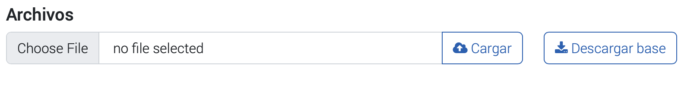

Carga masiva de resultados de mutacion
Carga masiva de resultados de mutacion
Para mejorar la eficacia y eficiencia del sistema de registro de muestras y resultados, se ha implementado un proceso para la carga masiva de "Resultados de mutacion" mediante una planilla Excel que se puede descargar y cargar en la plataforma. A continuación se detallan los pasos para realizar esta tarea de manera efectiva.
Acceder a la opcion de carga masiva
Para acceder a la carga masiva, debes seguir los siguientes pasos: 1. Ingresa a tu perfil de laboratorio. 2. Busca la opción "Carga masiva" en el menú y haz clic en ella. 3. Selecciona la sección "Muestras y resultados" en la pantalla de carga masiva.

Imagen de referencia: Cargas masivas
El proceso de carga masiva de muestras y resultados se realiza a través de un archivo en formato Excel. A continuación, se detallan los pasos que se debe seguir para realizar la carga masiva.
 Botones para descargar la base o planilla y carga de excel
- Descargue la plantilla de carga masiva de Resultados de mutacion. La plantilla se encuentra en formato Excel y contiene todas las columnas necesarias para la carga.
- Complete las columnas de la plantilla con la información correspondiente. A continuación, se detallan las columnas que se deben completar, así como las restricciones para cada una de ellas.
| Columna | Tipo de dato | Descripción | Restricciones | |----------------------------|--------------|-------------------------------------------------------------|-----------------------------------------------------------------------------------------------------------------------------------------------------------------------------------------------------------------------------------------------------------------------------------------------------------------------------------------------------------------------------------------------------------------------------------------------------------------------------------------------------------------------------------------------------------------------------------------------------------------------------------------------------------------------------------------------------------------------------------------------------------------------------------------------------------------------------------------------------------------------| | id_muestra* | Numero | ID MINSAL | Obligatorio Debe existir en el sistema No puede estar en blanco | | fecha_ejecucion_mutaciones | Fecha | Fecha Ejecución PCR mutaciones | Opcional No puede estar en blanco No puede ser mayor a 30 días | | codigo_kit_mutaciones | Varchar | Codigo KIT utilizados ejecución PCR mutaciones | Obligatorio Debe existir en el sistema No puede estar en blanco | | criterio_muestral_epi | Integer | Criterio muestral de selección epidemiológica | Obligatorio Debe ser 1 (sí) o 0 (no) No puede estar en blanco | | l452r | Varchar | Sonda L452R | Obligatorio No puede estar en blanco Debe ser: ALELO MUT, ALELO WT, NO AMPLIFICA ó NO ANALIZADO | | p681r | Varchar | Sonda P681R | Obligatorio No puede estar en blanco Debe ser: ALELO MUT, ALELO WT, NO AMPLIFICA ó NO ANALIZADO | | k417t | Varchar | Sonda K417T | Obligatorio No puede estar en blanco Debe ser: ALELO MUT, ALELO WT, NO AMPLIFICA ó NO ANALIZADO | | m_6970del | Varchar | Sonda 69-70DEL | Obligatorio No puede estar en blanco Debe ser: ALELO MUT, ALELO WT, NO AMPLIFICA ó NO ANALIZADO | | p681h | Varchar | Sonda P681H | Obligatorio No puede estar en blanco Debe ser: ALELO MUT, ALELO WT, NO AMPLIFICA ó NO ANALIZADO | | m_242244del | Varchar | Sonda 242-244DEL | Obligatorio No puede estar en blanco Debe ser: ALELO MUT, ALELO WT, NO AMPLIFICA ó NO ANALIZADO | | l452q | Varchar | Sonda L452Q | Obligatorio No puede estar en blanco Debe ser: ALELO MUT, ALELO WT, NO AMPLIFICA ó NO ANALIZADO | | n501y | Varchar | Sonda N501Y | Obligatorio No puede estar en blanco Debe ser: ALELO MUT, ALELO WT, NO AMPLIFICA ó NO ANALIZADO | | k417n | Varchar | Sonda K417N | Obligatorio No puede estar en blanco Debe ser: ALELO MUT, ALELO WT, NO AMPLIFICA ó NO ANALIZADO | | w152c | Varchar | Sonda W152C | Obligatorio No puede estar en blanco Debe ser: ALELO MUT, ALELO WT, NO AMPLIFICA ó NO ANALIZADO | | e484k | Varchar | Sonda E484K | Obligatorio No puede estar en blanco Debe ser: ALELO MUT, ALELO WT, NO AMPLIFICA ó NO ANALIZADO | | e484q | Varchar | Sonda E484Q | Obligatorio No puede estar en blanco Debe ser: ALELO MUT, ALELO WT, NO AMPLIFICA ó NO ANALIZADO | | t478k | Varchar | Sonda T478K | Obligatorio No puede estar en blanco Debe ser: ALELO MUT, ALELO WT, NO AMPLIFICA ó NO ANALIZADO | | r346k | Varchar | Sonda R346k | Obligatorio No puede estar en blanco Debe ser: ALELO MUT, ALELO WT, NO AMPLIFICA ó NO ANALIZADO | | e102k | Varchar | Sonda E102K | Obligatorio No puede estar en blanco Debe ser: ALELO MUT, ALELO WT, NO AMPLIFICA ó NO ANALIZADO | | v1176f | Varchar | Sonda V1176F | Obligatorio No puede estar en blanco Debe ser: ALELO MUT, ALELO WT, NO AMPLIFICA ó NO ANALIZADO | | d215g | Varchar | Sonda D215G | Obligatorio No puede estar en blanco Debe ser: ALELO MUT, ALELO WT, NO AMPLIFICA ó NO ANALIZADO | | e484a | Varchar | Sonda E484A | Obligatorio No puede estar en blanco Debe ser: ALELO MUT, ALELO WT, NO AMPLIFICA ó NO ANALIZADO | | interpretacion | Varchar | Interpretación | Obligatorio No puede estar en blanco Debe ser: DETECCIÓN DE MUTACIONES ASOCIADAS A VARIANTE ALPHA,DETECCIÓN DE MUTACIONES ASOCIADAS A VARIANTE BETA, DETECCIÓN DE MUTACIONES ASOCIADAS A VARIANTE DELTA,DETECCIÓN DE MUTACIONES ASOCIADAS A VARIANTE EPSILON, DETECCIÓN DE MUTACIONES ASOCIADAS A VARIANTE ETA,DETECCIÓN DE MUTACIONES ASOCIADAS A VARIANTE GAMMA, DETECCIÓN DE MUTACIONES ASOCIADAS A VARIANTE IOTA,DETECCIÓN DE MUTACIONES ASOCIADAS A VARIANTE KAPPA, DETECCIÓN DE MUTACIONES ASOCIADAS A VARIANTE LAMBDA,DETECCIÓN DE MUTACIONES ASOCIADAS A VARIANTE ZETA, DETECCIÓN DE MUTACIONES ASOCIADAS A VARIANTE MU,INDETERMINADO,INDETERMINADO S, NO SE DETECTAN MUTACIONES PARA VARIANTES DE INTERÉS POR PARTE DE ESTE KIT DETECCIÓN DE MUTACIONES SOSPECHA VARIANTE ÓMICRON DETECCIÓN DE MUTACIONES ASOCIADAS A VARIANTE ÓMICRON SUBLINAJE BA.4 O BA.5 | | derivar_isp | Boolean | ¿Derivar para secuenciamiento a ISP? Valores: 0 = No 1 = Si | No es obligatorio | | observacion_mutacion | Varchar | Observación | No es obligatorio |
- Se debe seleccionar el archivo a cargar y hacer clic en "Cargar".